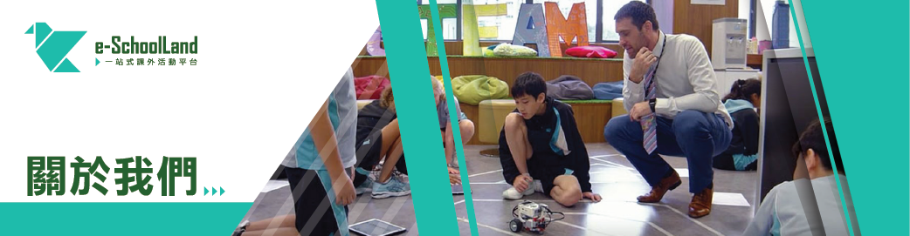
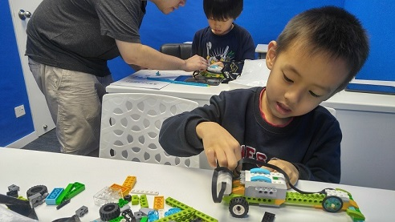

<!-- <ion-header>
  <ion-toolbar>
    <ion-title>join-us-submenu2</ion-title>
  </ion-toolbar>
</ion-header> -->
<app-header></app-header>
<ion-content>
  <ion-slides>
    <ion-slide>
      <!-- 500*130 *  -->
      
      <!-- C:\Users\hf\Desktop\ionic4-full-starter-app-pro-version-1.2.1\src\assets\sample-images\user\about-us.png -->
      <!-- <h1>Slide 1</h1> -->
    </ion-slide>
  </ion-slides>

  <ion-grid>
    <ion-row>
      <ion-col size="7">
        <ion-card style="text-align: left; box-shadow: none;">
          <ion-card-header style="font-size: larger; font-weight: bold;">理念背景</ion-card-header>
          <ion-card-content>
            e-SchoolLand 專為學校教職員而設的快速報價平台，為學校與到校課外活動供應商進行配對，從而讓學校有效地揀選合適的供應商，節省進行報價程序的時間及工序，減輕教職員的工作量 。
            <br>
            <br>
            教職員只需按一個按鈕鍵“Get a Quote", 便能獲得充足的合適報價。 供應商方面， 亦能因此而獲得商機。
          </ion-card-content>
        </ion-card>
      </ion-col>
      <ion-col size="5">
        <ion-card style="text-align: center;">
          <!-- src\assets\sample-images\user\理念背景_1.jpg -->
          
        </ion-card>
      </ion-col>
    </ion-row>
  </ion-grid>

  <app-global-banner></app-global-banner>

</ion-content>